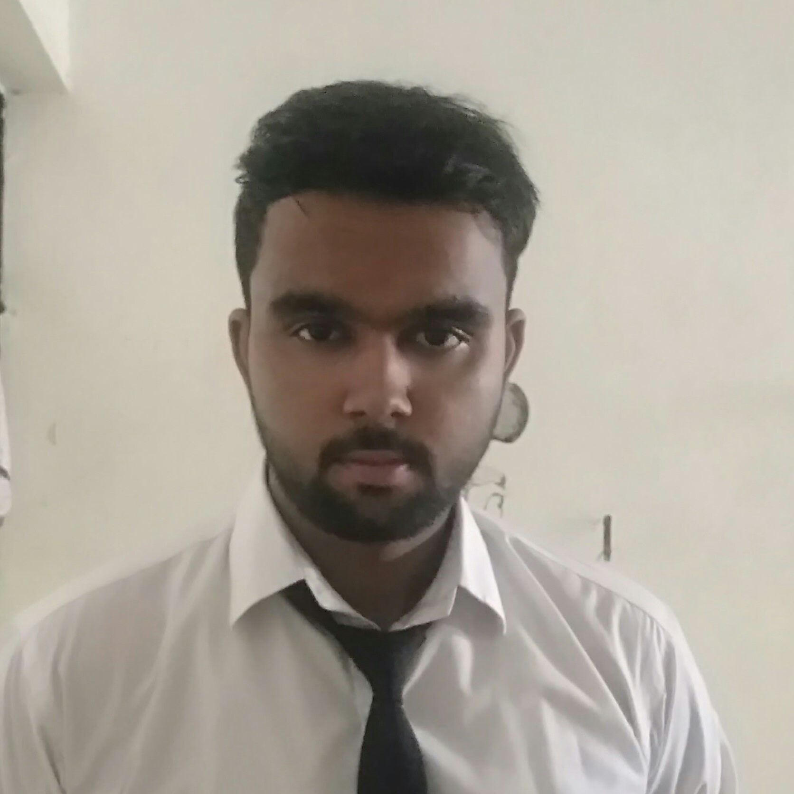

Name: Mohammed Asi sheikh
Roll number: K19RCB38
Aryan Sharma
Roll number: K19RCB37

Aman Rana
Roll number: K19RCB39

The Ministry of Power is mainly responsible for evolving general policy in the field of energy. The main items of work dealt with by the Ministry of Power are as below :
1.General Policy in the electric power sector and issues relating to energy policy and coordination thereof. (Details of short, medium and long-term policies in terms of formulation, acceptance, implementation and review of such policies, cutting across sectors, fuels, regions and intra country and inter country flows
2.All matters relating to hydro-electric power (except small/mini/micro hydel projects of and below 25 MW capacity) and thermal power and transmission & distribution system network;
3.Research, development and technical assistance relating to hydro-electric and thermal power, transmission system network and distribution systems in the States/UTs;
4.Administration of the Electricity Act, 2003, ( 36 of 2003) , the Energy Conservation Act , 2001 (52 of 2001 ), the Damodar Valley Corporation Act,1948 ( 14 of 1948) and Bhakra Beas Management Board as provided in the Punjab Reorganisation Act,1966 (31 of 1966 ).
5.All matters relating to Central Electricity Authority, Central Electricity Board and Central Electricity Regulatory Commission;
1. Mission: mission is to provide quality electricity to customers adequately, safely, sustainably at affordable cost.
2.Vision: vision is to be the best power utility in India.
Electricity Board which was constituted by the Government of INDIA, as per order no. EL1-6475/56/PW dated 7-3-1957 of the State Government, under the Electricity (Supply) Act, 1948 for carrying out the business of Generation, Transmission and Distribution of electricity in the state.
As per section 172 (a) of the Electricity Act 2003 and as mutually decided by the Government of India had continued as Transmission utility and Distribution licensee till 24-09-2008.
In exercise of powers conferred under sub-sections (1), (2), (5), (6) and (7) of section 131 of the Electricity Act, 2003, State Government vide the notification G.O (Ms).37/2008/PD dated 25 September 2008 vested all functions, properties, interests, rights, obligations and liabilities State Government till it is re-vested the same in a corporate entity.Over the last fifty nine years, the Board has grown from a total installed capacity of 109 MW to an installed capacity of 2823 MW and created Transmission and Distribution networks of over 10404 and 272480 circuit kilometers respectively. At present, the Board caters to the needs of over 1 crore consumers spread over the urban and rural areas of the State. This incremental growth in the power system brought several changes in the characteristics of the system. The input cost structure and revenue composition have undergone significant changes. Until the recent past, the hydroelectric plants owned by the Board supplied a major portion of the energy requirement of the state. However, after the promulgation of the Forest Conservation Act in 1980, the implementation of new hydroelectric projects had been seriously affected and more costly thermal energy had to be generated / purchased to meet the increasing demand.
Over the years, the consumption of heavily subsidised domestic sector has been increasing and now, it accounts for approximately 46% of the total energy consumed. As a consequence, the peak demand in the state has increased to almost twice the off-peak demand. This forced more investment in the power system to meet the peak demand and purchase of thermal energy from outside the State. But the capacity so created for meeting the peak demand remains under-utilised during the off-peak periods. The Board had been supplying electricity at lowest price in the country for several decades. Because of this the Board had to resort to heavy borrowings to meet the expenses. Though the Board was statutorily enjoined to function as a commercial institution, it continued to function mainly with service orientation providing infrastructure facility, reliefs and concessions to other sectors like industry, agriculture and so on. Now, the State Commission insist upon to perform strictly on commercial considerations.
1.Identify viable and beneficial renewable energy projects (Colony solar projects ( Agali model), District wise solar projects), customer roof top solar projects and prepare DPR for submission to Central and State Governments for approval and financing.
2.Tendering and awarding of renewable energy projects and innovation works.
3.Distributed Decentralized Generation Projects and sustainable micro grids – design and implementation.
4.Other projects (SMART GRID, Solar park etc).
1.Screening, Selection, Development and implementation of innovative ideas in renewable energy and energy savings sector from the public to mentor and handhold them to realise their projects, with the aid of Innovation fund from the Govt.
2.Selection, research and development of innovative ideas in Solar, wind and other Renewable Energy power generation sector in scale suitable.
3,Development of innovative and research projects related to sustainable energy to supply quality electricity to the backward and sensitive colonies/ communities.
4.The ideas has to be submitted before the CE(REES) or Innovation Group under CE(REES). The idea will be evaluated by a panel of experts, and the innovator will be called for a pitch presentation before the panel of Experts.
Contact Mail - innovation@electricityboard.com
Contact Number - Innovation Group - 0471 2514421,
AEE – 9496012417, AEE – 9496012416, AE - 9446008965
For more detail please visit our nearest branch.
Or you can contact us on Email: electricityboard@gmail.com
Or
Name: Mohammed Asi sheikh
Roll number: K19RCB38
Aryan Sharma
Roll number: K19RCB37
Aman Rana
Roll number: K19RCB39